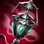
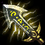

Items can be separated into 3 types :
Passive Items are those that do not require any activation beyond the buying process. They are in full effect as soon as they are in any of your 6 inventory slots.
Active Items are those that, althought they have passive stats like Passive Items, they have additional effects that are activated either by pressing the number bound to the inventory slot they are in, or automatically when certain circumstances are met. For example: Guardian Angel's Active is used upon taking lethal damage (0 HP). Since these items have a Passive and an Active, their passive counterpart is weaker than a pure Passive Item.
Consumables, like Health Potions, do not provide anything until activated, and disappear or lose effect after the first use. Some consumables can be bought even if the player doesn't have a free inventory slot, and are aplied immediately, like Elixirs.
Some Items have Unique effects, that cannot stack with each other. On Active Items The cooldown will be applied on all items that have the same active. This means that if you buy 2 Guardian Angels, when your HP drops down to 0, the item will automatically use, and both will enter the cooldown.
The items you choose to buy are considered your Build. And to build properly, you have to be aware of your Champion, your team, and finally, the enemy team's Champions and Items too!
Wards are important items that contribute to your team's vision, and overall playmaking capability. While everyone can get free stealth wards from their trinket (costs 0 Gold and stays in the 4th inventory slot), you need to buy Control Wards to contribute to the Vision Control part of League of Legends.
When you first spawn, you start with 500 Gold, which can be spent on Starting Items. These are highly cost effective items, but they don't build into stronger items, meaning they are only good for Early Game.
In the Late Game phase of the game, everyone should have 6 full items that cannot be upgraded further. even if they are not super cost effective like the Starting Items, the stats are much higher, and have better actives too. Some Champions have higher scaling on abilities, and as such are stronger in the Late Game than others. You should pace your game according to your team's strengths and weaknesses.
| Name | Stats | Passive Effect | Active Effect | Cost | Explanation |
|---|---|---|---|---|---|
| Main Starting Items | |||||
 Doran's Blade Doran's Blade |
+80 HP +8 AD +3% Life Steal |
--- | --- | 450 Gold | Usually the Go-To Starting Item on AD Champions. |
 Doran's Shield Doran's Shield |
+80 HP | +6 flat health regeneration per 5 seconds. Unique: Restores 20 health over 10 seconds after taking damage from an enemy Champion. |
--- | 450 Gold | Usually the Go-To Starting Item on Tank Champions. |
 Doran's Ring Doran's Ring |
+60 HP +50% Base Mana Regeneration +15 Ability Power |
UNIQUE: Restores 4 mana upon killing an unit. | --- | 400 Gold | Usually the Go-To Starting Item on AP Champions. |
| Basic Trinkets | |||||
 Warding Totem Warding Totem |
Stores one charge every 180 - 90 (based on level) seconds, up to 2 maximum charges. | --- | Consume a charge to place an invisible Stealth Ward which reveals the surrounding area for 60 - 120 (based on level) seconds. | 0 Gold | You should get this free trinket at the start of every game. |
| Sweeping Lens | --- | --- | Summons a drone at the target location for 6 seconds (500-2000 range (based on level). The drone outlines camouflaged, invisible and unseen enemies (including stealth, fog and brush), reveals Wards and stealthed traps, and disables Wards within a 450-575 (based on level) radius area (90 - 60 (based on level) second cooldown). | 0 Gold | You should get this free trinket if you have a warding item, and want to take out enemy wards. |
| Some Important Items | |||||
| Duskblade of Draktharr | +55 AD +10% Cooldown Reduction (CDR) |
UNIQUE: +18 Lethality (11.2 - 18 (based on level) armor penetration) | UNIQUE – NIGHTSTALKER: After being unseen for at least 1 second, your next basic attack against an enemy Champion will have enhanced effects. UNIQUE – BLACKOUT: When spotted by an enemy ward, causes a blackout for 8 seconds, disabling all nearby enemy wards (90 second cooldown). |
2900 Gold | Mainly a melee Assassin Item. |
| Ardent Censer | +50% base mana regeneration +60 ability power +10% cooldown reduction UNIQUE: +10% heal and shield power |
UNIQUE: +8% movement speed. UNIQUE: Heals and shields on allied Champions (excluding yourself) enhance your basic attacks and theirs for 6 seconds. Granting you and them +20% - 35% (based on target's level) attack speed and 20 - 35 (based on target's level) bonus on-hit magic damage. |
--- | 2300 | Currently one of the strongest Support Items. |
| Gargoyle Stoneplate | +40 magic resistance +40 armor |
UNIQUE – STONE SKIN: If 3 or more enemy Champions are nearby, grants 40 bonus armor and 40 bonus magic resistance. | UNIQUE – METALLICIZE: Increases current and maximum health by 40%, as well as Champion size, but reduces the damage you deal by 60% for 4 seconds. If STONE SKIN is active, instead increases health by 100% (90 second cooldown). Current health percentage is conserved when the effect ends, as well. | 2500 Gold | A great Tank item, that greatly buffs any skill with HP ratio. |
| Infinity Edge | +70 attack damage +20% critical strike chance |
UNIQUE: Critical strike bonus damage is increased by 50%. | --- | 3400 Gold | Mainly an ADC Item. Gives huge damage boost to crits. |
 Rabadon's Deathcap Rabadon's Deathcap |
+120 Ability Power | UNIQUE: +35% ability power. | --- | 3800 Gold | A powerful item for pure AP casters. |